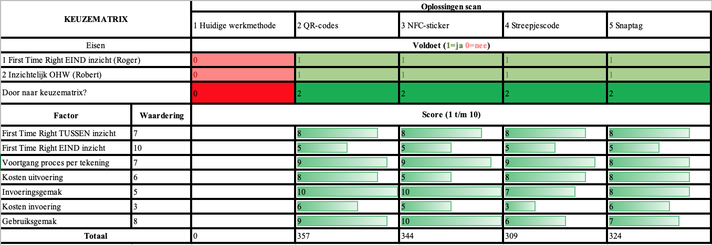
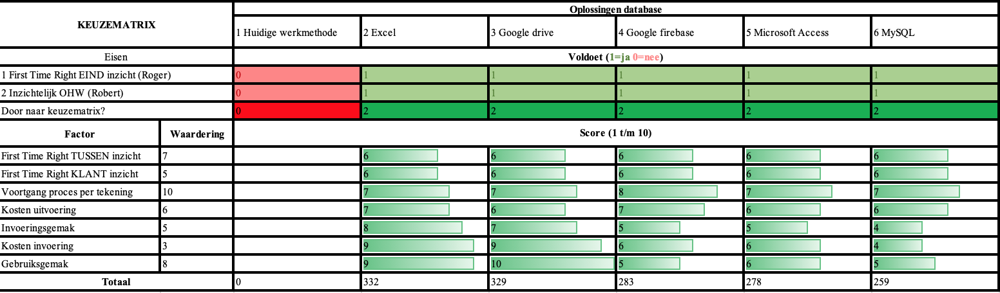

Analyseren
Smart Start: Beschrijf de mate van volwassenheid van een organisatie m.b.t. Smart Industry in een business case.
Tijdens de tweede week van de Minor hebben we een analyse uitgevoerd op het bedrijf AXA. Hierbij hebben we een Business Model Canvas ingevuld en een business case uitgewerkt, Hiervoor verwijs ik naar de diapresentatie in Week 2. We hebben hetzelfde gedaan met de projectgroep bij Kropman. We hebben een BMC uitgewerkt die te vinden bij Bedrijfsbezoek 3 op de pagina Week 7+. Verder hebben we aan de hand van verschillende wensen en eisen een matrix (zie hieronder) ingevuld die uiteindelijk liet zien wat het beste idee was. Dit hebben we daarna uitgewerkt in een mooi investeringsidee dat te zien in op de pagina Project.
 Het is leuk om dingen die je in de theorie leert direct toe te passen in het bedrijfsleven. Het BMC is hier een heel mooi voorbeeld van. Ik heb geleerd dat je door middel van dit model snel de core business van een bedrijf kan formuleren. Verder kan je snel zien waar verbetering in zit en waar deze dan uitgevoerd dient te worden. Ik heb met plezier aan deze compententie gewerkt en ik kan dit zeker meenemen in de rest van mijn carrière.